1.3.4. Images
In the next step we will insert images into the content. Before we can do this, we first have to upload the image files. Be aware that only the following image formats are supported by Docmenta:
| Format | MIME-type | Allowed extensions |
|---|---|---|
| BMP | image/bmp | .bmp |
| CGM | image/cgm | .cgm |
| GIF | image/gif | .gif |
| IEF | image/ief | .ief |
| JPEG | image/jpeg |
.jpeg .jpg .jpe
|
| PNG | image/png | .png |
| SVG | image/svg+xml | .svg |
| TIFF | image/tiff | .tif |
An image of any other format has to be converted into one of the above formats.
Image filenames
Furthermore, before we upload images, we have to think about the filenames of the images. Docmenta imposes restrictions on the naming of image files. The reason for this is, that Docmenta uses the filename (excluding the file extension) as the alias name used to reference the image. Therefore, the image filename can only consist of letters, digits, underscore (_), dash (-) and exclamation-mark (!). If an uploaded image contains other characters within the filename, then these will automatically be converted to underscore characters. The exclamation mark can be used to create image variants. See Section 1.10.2, “Node variants” for additional information.
Furthermore you cannot upload two images to different image-folders which have the same filename. The filename of an image always has to be unique within the complete product documentation. Otherwise references to an image could become ambiguous. If you upload an image to an image-folder that contains an image with the same filename, you will be asked whether you want to overwrite the existing image or not.
Image upload
Image files that shall be referenced from within the content have to be stored in image-folders. Image-folders show a thumbnail-gallery preview of the images. Each product has a default image-folder with name "Media" on the root level of the product tree (see red arrow in the screenshot below).
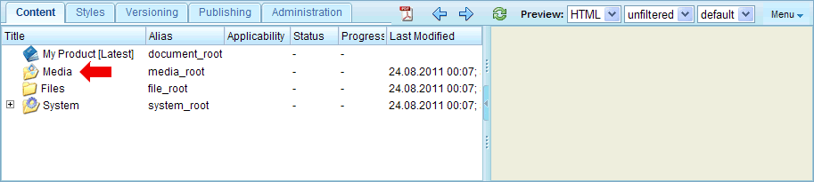
Figure 1.3.38. Media root folder
In our example we will insert a small image into the content. As an example, the filename shall be "myicon.gif". Given this filename, the alias name of the image is "myicon".
To upload the icon to the "Media" folder, right-click the folder and choose "Upload File" from the context menu. This will open the following upload-dialog:
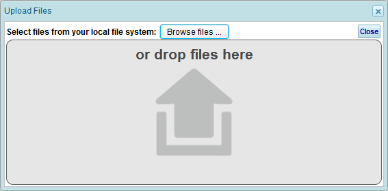
Figure 1.3.39. File upload dialog
Click the "Browse files ..." button and select the file(s) to be uploaded. Alternatively you can drag and drop the files into the marked area within the upload-dialog. In our example upload the file "myicon.gif" from the filesystem. After upload is finished (depending on the file-size this may take some time) a preview of the uploaded files is displayed in the upload-dialog:
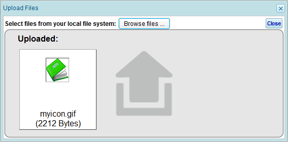
Figure 1.3.40. File upload dialog with selected file
After all files have been uploaded, click the "Close" button to close the upload-dialog. The uploaded files are now listed as sub-nodes of the image-folder. Select the "Media" folder in the product tree, to see a thumbnail gallery preview of the contained image-files:
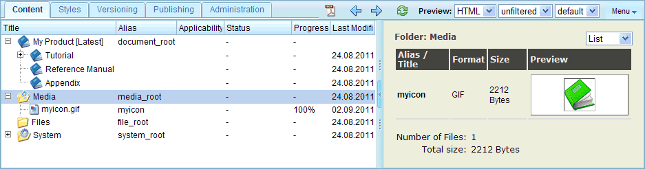
Figure 1.3.41. Image gallery preview
Alternatively, to upload multiple files, you can put the files into a zip-archive and upload the zip-file. If a file with extension ".zip" is uploaded, you will be asked whether the file shall be extracted.
Inserting an image into the content (inline)
Now we can insert the image into the content. The image shall be inserted inline into the normal text flow. "Inline" means that the image shall not force any line-break before or after the image. To do this, open the content-editor for the content-node that we have created in the previous chapter. Place the cursor at the position where the image shall be inserted, e.g. between two words in the first sentence, and click the "Insert/edit image" button ( ). This will open the image properties dialog:
). This will open the image properties dialog:
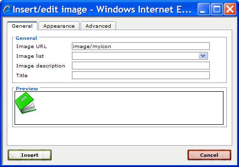
Figure 1.3.42. Image properties dialog
Enter the image URL or select an image from the Image list. An image which was uploaded into an image folder, can be referenced with the following image URL:
image/<alias>
where <alias> is the alias name of the image (i.e. the filename without file extension). Therefore in our example, enter the URL "image/myicon" as shown in the screenshot above.
Optionally, enter an image description. The image description is important for users with disabilities. Furthermore for interative output formats (e.g. HTML) the image description will be shown as pop-up text when the user moves the mouse over the image.
Finally, click the "Insert" button to close the dialog. The image will then be inserted at the current cursor position:
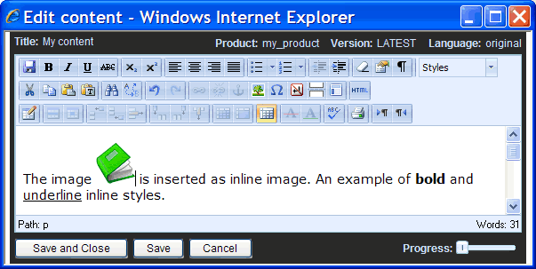
Figure 1.3.43. Content-editor with inserted inline image
As a next step we want to reduce the size of the image. The inserted image shall have the same height as the text. Therefore we have to open the image properties dialog again. To edit image properties of an existing image, select the image (i.e. click on the image) and click the "Insert/edit image" button (). Now switch to the "Appearance" tab and enter the desired image dimension, e.g. enter an image width of 14 pixels and a height of 15 pixels as shown in the screenshot below.
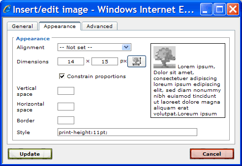
Figure 1.3.44. Setting the image size
If the dimension fields are left empty (as is the default), then the image will be rendered with its actual size. If an image width and/or height is entered, then the image is rescaled to this size for all output formats (e.g. HTML, PDF, ...).
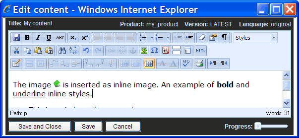
Figure 1.3.45. Resized image
Sometimes you may want to have a different image size for print output than for the other output formats. You can achieve this by entering a "print-width" and/or "print-height" value in the "Style" field, as shown in the screenshot above. See 'Images' in the reference manual for more information.
Note: Of course it is allowed to insert the same image more than once at different locations (i.e. different image elements can have the same image URL).
User-defined image folders
In the next excercise we upload and insert another image. But this time, we do not upload the image to the "Media" root folder, but we create an image-folder as a sub-node of the "Tutorial" section. The image-folder shall be the first child-node within the "Tutorial" section. Therefore right-click the first content-node within the "Tutorial" section, and choose "Insert before ..." from the context menu. Select the node-type "Image folder" and enter a folder-name, e.g. "images", in the following dialog. The result is shown in the screenshot below:
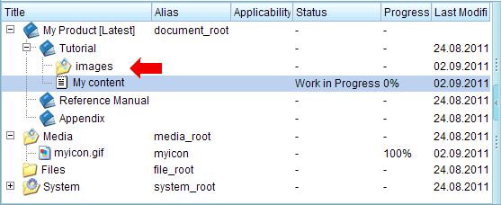
Figure 1.3.46. User-defined image folder
We now upload a image to the newly created image-folder. The procedure is the same as the upload to the "Media" root folder (see description above), except that you select the created image-folder instead of the "Media" folder. In our example we upload an image with filename "myillustration.jpg".
Inserting an image with title-line
In the previous example you have inserted an image as inline element, i.e. it is part of the text flow within the paragraph. But often you want the image to form a separate paragraph. To achieve this, just create an empty paragraph (e.g. by pressing enter at the end of an existing paragraph) and insert the image as described in the icon example above, but this time enter the image URL of the previously uploaded image, i.e. "image/myillustration". Following screenshot shows an example of an image which was inserted in a separate paragraph:
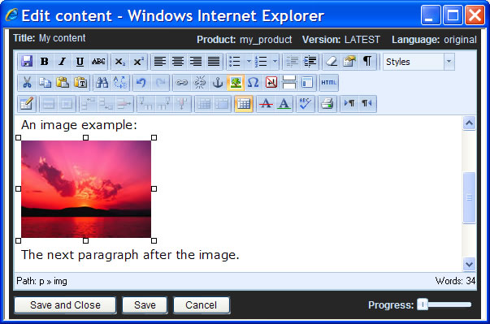
Figure 1.3.47. Image within separate paragraph
By default the image is left-aligned. But you can change the alignment by pressing one of the "Align left" , "Align center" or "Align right" buttons:
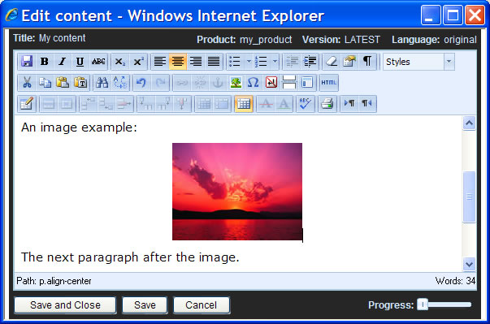
Figure 1.3.48. Centered image
For web-based output, it is also possible to let the text float around the image. For information on how to achieve this, see 'Images' in the reference manual.
An image can also have an automatically generated title-line. Images that have a title, get an automatically generated figure number which will be shown in the title-line. To assign a title to an image, select the image (i.e. click the image) and click the "Insert/edit image" button () to edit the properties of the selected image. In the opened dialog enter an image title:
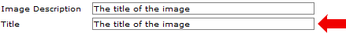
Figure 1.3.49. Setting the image title
It is recommended, to also supply an image description for each image. Most browsers show the image description as pop-up text, when the user moves the mouse over the image. Usually, the same text can be supplied as image title and as image description.
Click "Update" to close the "Insert/Edit Image" dialog. The title and image description is now assigned to the image.
Save the content and close the content-editor by clicking "Save and close" in the bottom-panel of the content-editor. The updated content should now be shown in the preview-area.
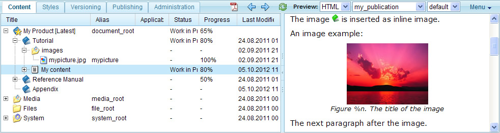
Figure 1.3.50. Preview of content with image
As you can see, the preview now shows a title-line below the image. You may notice, that instead of the figure number, the placeholder "%n" is shown. The reason for this is, that the figure numbers are inserted during the publication export process, but not for HTML preview.
To see a PDF preview of the content, click the "PDF preview" button in the toolbar:
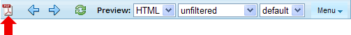
Figure 1.3.51. PDF preview button
This will open a new window showing the selected node rendered as PDF. As you can see, this time the image has an automatically generated figure number:
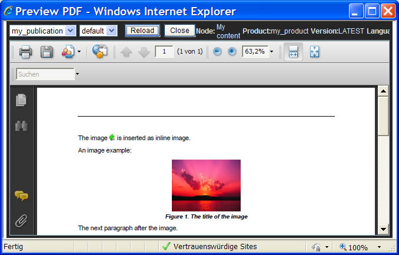
Figure 1.3.52. PDF preview of content with image
Notes:
- In the output-configuration you can define whether title-lines shall be placed before or after images. See Section 1.8.2, “Output configurations” in this tutorial for more information.
- The generated label is language dependent. For example, if the content language was German, than the generated label would be "Abbildung %n" instead of "Figure %n". See Section 1.13.4, “Gentext settings” in this tutorial on how to customize the generated label.
- The generated figure number is useful if you want to reference the image from within the text. See Chapter 1.4, Linking content in this tutorial for more information on how to create references to images.
- See 'Images' in the reference manual for additional information.